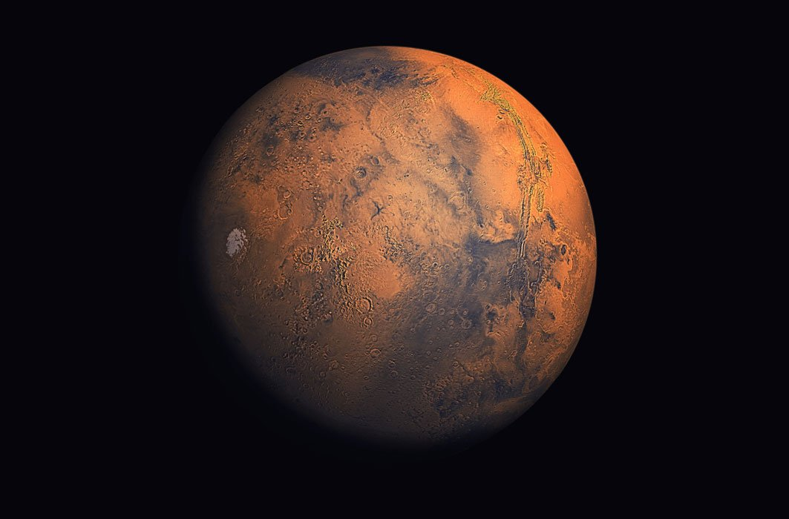

Mars

Présentation
Mars est la quatrième planète à partir du Soleil dans notre système solaire et est souvent appelée la
"planète rouge" en raison de sa couleur distincte. Voici une brève présentation de certaines de ses
caractéristiques principales :
- Taille et Position :
- Mars a un diamètre d'environ la moitié de celui de la Terre, soit environ 6 792 kilomètres.
- Elle est située à une distance moyenne d'environ 225 millions de kilomètres du Soleil.
- Atmosphère :
- L'atmosphère martienne est très mince, principalement composée de dioxyde de carbone avec des
traces de gaz comme l'argon et le diazote.
- Son atmosphère est environ 100 fois plus fine que celle de la Terre.
- Exploration :
- Depuis les premières missions d'exploration robotique dans les années 1960, de nombreuses sondes
spatiales, robots et rovers ont été envoyés sur Mars pour étudier sa surface, son atmosphère et
sa géologie.
- Des projets de missions habitées vers Mars sont en cours de développement par diverses agences
spatiales, visant à établir des colonies humaines sur la planète rouge dans un avenir proche.
Caractéristiques
- Topographie :
- La surface de Mars est caractérisée par des cratères, des volcans, des canyons et des plaines.
- Le plus grand volcan du système solaire, Olympus Mons, se trouve sur Mars.
- Eau :
- Des preuves suggèrent qu'il y a des milliards d'années, Mars avait de l'eau liquide à sa
surface, indiquant la possibilité de conditions propices à la vie.
- Les missions d'exploration ont découvert des preuves de glace d'eau sous forme de calottes
polaires et de dépôts souterrains.
funfact
- Projet de Colonisation par Elon Musk :
- Elon Musk, le fondateur de SpaceX, a exprimé son intention de coloniser Mars afin de rendre l'humanité multiplanétaire.
- Une partie de son plan consiste à rendre l'environnement martien habitable en terraformant la planète.
- Une proposition avancée par Musk implique l'utilisation de bombes nucléaires pour chauffer les calottes polaires de Mars, libérant ainsi le dioxyde de carbone piégé et augmentant la pression atmosphérique.
- Ce processus de terraformation vise à créer des conditions plus semblables à celles de la Terre, permettant éventuellement à l'eau liquide de couler à la surface et rendant la planète plus accueillante pour la vie humaine.